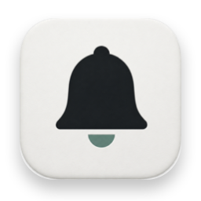
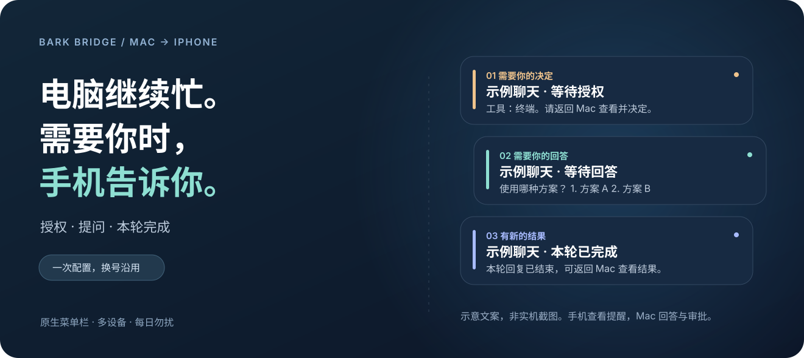

Bark Bridge for Mac
电脑继续忙，需要你时手机提醒。
把 Codex 的授权、提问和本轮完成提醒，送到 iPhone Bark。同一 Mac 用户共用设备配置，现有接入目录换号继续用。

Apple Silicon · 约 32 MB · 内含图形安装助手与 Python，无需源码编译
SHA256：49aec3e590de9db3d4284f49b1c15695217d9a8e5e62fe2a0c98d06eaf9e25f9

离开电脑，也知道下一步
需要你时提醒
授权、提问／选择、本轮完成三类提醒分别控制，支持带聊天名及短问题预览。
配置一次，换号继续用
同一 macOS 用户共用手机地址，Mac 换 Codex 账号时，iPhone Bark 无需改配置。
由你决定发给谁、何时安静
记忆多台手机，按来源分配设备；也能暂停、临时静音或设置每日勿扰。
留意 Mac 电量
未接电源时的 20% / 10% 提醒，监听系统电源事件。
知道长任务结束
显式包装的终端任务，以及 Mac 快捷指令末尾调用模板。
保持版本更新
设置中检查版本，选择自动下载，校验后手动重启安装；2.6.0 起支持签名程序更新包。
可以接入哪些来源
| 来源 | 接入方式与验证范围 |
|---|---|
| Codex | 本机 Hook 及共享 Skill；授权、支持的提问工具和主线程本轮结束已验证。普通文字提问依赖 Skill，可能遗漏。 |
| Mac 电池 | 系统电源事件；读数和阈值规则已验证，尚未做真实放电至低电量的测试。 |
| 终端任务 | bark-run 包装明确指定的命令，保留输出与退出码；已验证事件链路。 |
| Mac 快捷指令 | 在末尾加入模板命令；调用链路已验证，需自行配置工作流。 |
| Claude Code · 实验性 | PermissionRequest、AskUserQuestion、Stop；仅完成配置合并与隔离测试，尚未验证真实会话。 |
| 其他应用 | 使用自定义调用入口；能否自动触发取决于应用是否提供事件能力。 |
“本轮完成”表示主线程一轮回复结束，不表示所有后台工作或整个聊天已完成。添加一个 .app 只是登记来源，还需该应用提供 Hook 脚本或明确的调用入口，不会自动转发全部 macOS 通知。
快速开始
- 下载安装预览 ZIP，解压后先阅读
Start Here.html，再打开Install Bark Bridge.app。查看安装位置、选择是否接入默认 Codex 目录，点击“安装并打开”。 - 已有安装请继续使用原 App。该助手只支持首次安装，检测到已有 App 或共用运行目录时会停止。已有 2.6.0+ 客户端可使用设置中的签名更新。
- 添加手机，确认收到测试。iPhone 安装 Bark 并允许通知；打开面板管理接收设备，将 iPhone Bark 首页的 HTTPS 推送地址填入，保存并发送测试，在手机上确认收到。手机地址只在自己的 Mac 填写，不需要放进聊天、Hook 或 GitHub。
从源码构建的替代方式、自定义 CLI 路径、多账号接入、终端／快捷指令模板，见完整安装指南：
使用前了解
- 平台：界面仅在 macOS 26、Apple Silicon 实机验证；构建目标为 macOS 13+，旧系统和 Intel 界面尚未实测。
- Codex 兼容：已验证版本为
0.167.0-alpha.3.2，Hook 与信任接口可能随更新变化；云端会话不自动继承本机接入。 - 送达：网关接受不等于手机实收。Mac 睡眠、关机、离线、APNs 或 iPhone 专注设置都可能影响提醒。
- 分发：安装预览仅提供 Apple Silicon，采用 ad-hoc 签名，未使用 Developer ID 签名或 Apple 公证；全新 Mac 的下载隔离提示与首次打开流程尚未实机验收。
隐私与资源
设备地址位于 ~/Library/Application Support/CodexBark，目录权限为 0700，手机配置为 0600。不读取账号令牌，也不打开聊天正文文件来获取名称；聊天名来自本地只读名称元数据。预览开启时，所选 Bark 服务会收到聊天名、有限长度的问题／选项或固定文案。权限提醒不发送具体授权命令，完成提醒不发送回复正文；常见密钥形式会脱敏，但不能保证识别所有敏感内容。不希望外发摘要时，可关闭“手机内容预览”。菜单与电池服务常驻，设置面板关闭后退出。发送器按事件短暂运行，失败不阻塞 Codex，无网络轮询或长期自动重试。不宣称零内存或零耗电。
反馈与贡献
遇到问题，可在 Issues 描述 Mac／Codex 版本、触发场景及脱敏错误类别。提交截图前请隐藏聊天内容、设备地址和密钥。欢迎通过 Pull Request 改进兼容性、文档与测试。